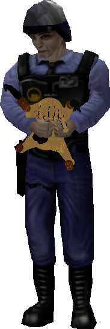

Welcome to the New Lambda Research Facility. This directory serves to act as both a resource for the New Lambda scientists and an educational tool for the general public. All information in this directory is available for public dissemination.
Please Make a Selection:
Xenobiological Observation and Research[petz content]
Historical Archive Transformative Works [ERROR]